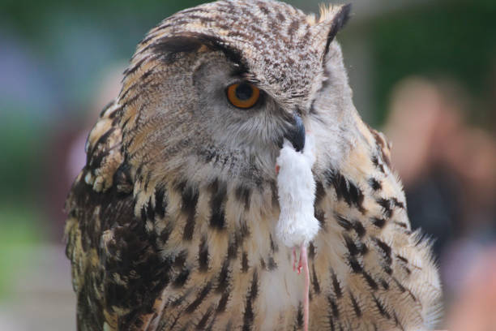

Informacion detallada
A continuacion, presentaremos distintos datos de estas bellas aves, desde sus habitos alimenticios, hasta sus conductas reproductivas y habitats
Hábitos alimenticios
Los Búhos son carnivoros, suelen alimentarse de presas de una talla similar o menor que la suya como insectos, peces u otras aves, gracias a sus increibles sentidos de la vista y el oído, suelen cazar de noche. No mastican su comida, la desgarran con las patas y el pico y tragan la comida de manera directa

Se alimenta mayormente de
- Roedores
- Peces
- Aves pequeñas
- Insectos
Suelen cazar
- De noche
- En solitario
Hábitos Reproductivos
Al igual que el resto de aves, los Buhos son oviparos, suelen poner entre 3-4 huevos pero segun la especie pueden llegar a poner hasta 10 las hembras pueden anidar durante todo el año pero la epoca mas comun e intensa es cerca de la primavera Como nido, los Búhos suelen utilizar cavidades naturales en sitios como arboles, acantilados o demas e incluso pueden utilizar nidos vacios o abandonados dejados por otras aves algo particular de los buhos es que son capaces de permanecer con una misma pareja durante el resto de sus vidas por mas que distintas situaciones los separen por periodos extendidos de tiempo
Habitats y distribucion.
Hay muchas especies de búhos, desde los pequeños redondos hasta las grandes aves de rapiña capaces de comerse zorros por su cuenta Los búhos viven en casi todos los hábitats, excepto los de gran altura o desiertos sin árboles. Sin embargo un 80% de los "Strigidae" se encuentran en bosques de tierras bajas Estas aves se adaptan fácilmente a diversos ecosistemas siempre que cumplan con condiciones basicas de clima y alimento. por lo que pueden encontrarse en la mayoria de regiones del mundo exceptuando la Antartida. A continuacion se presentara una tabla indicando las especies mas caracteristicas en algunas regiones.
| Búhos Iconicos | Región | Caracteristicas clave |
|---|---|---|
| Bubo Virginianus(Búho Cornudo) | America del Norte |
|
| Bubo magellanicus(Tucúquere) | America del Sur |
|
| Bubo Bubo(Búho Real) | Europa |
|
Estado de conservacion
Los Strigidae se encuentran incluidos en el apéndice II de CITES(Convencion sobre el Comercio Internacional de Especies Amenazadas de Fauna y Flora Silvestre) En este se encuentran aquellas especies que, aunque no estén en grave peligro de extinguirse, podrian estarlo si su comercializacion no se regula dentro de los controles, es necesario un permiso de exportacion. Aunque dentro del marco legal de CITES no se contempla una autorizacion para realizar importaciones
Especies en peligro de extincion
Lamentablemente, muchas especies de búho estan en peligro de extincion en la actualidad La pérdida de habitat, la caza furtiva, la contaminacion y el cambio climatico son algunas de las principales amenazas que enfrentan estos magnificos animales, algunas de las especies de búhos mas amenazadas incluyen:
- El búho real: Esta especie, que solía estar ampliamente distribuida en Europa, Asia y el norte de África, ha experimentado una disminucion significativa en su poblacion debido a la pérdida de hábitat y la caza ilegal.
- El Búho lechuzo(Tyto alba): Este búho es conocido por su aspecto distintivo y su llamada caracteristico sin embargo, la pérdida de hábitat y la disminucion de las poblaciones de presas han llevado a una disminucion en su numero en muchas partes del mundo
- El búho nival(Bubo scandiacus): Esta especie de búho ártico se enfrenta a amenazas como el cambio climatico y la perdida de hábitat debido al derretimiento de los casquetes de hielo. Su población ha disminuido en las últimas décadas, y se considera en peligro de extinción en algunas regiones.